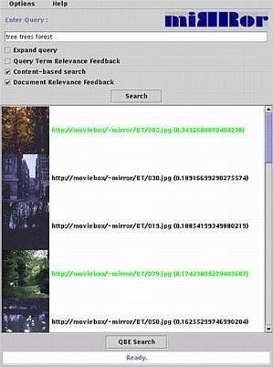
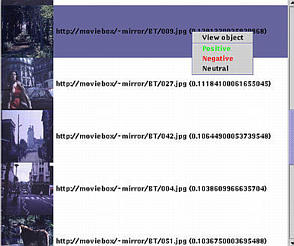

 |
 |
These initial results may now be improved upon using short-term learning through relevance feedback on good images. On the left, you see the relevant top ranked images that have been marked, and on the right, you see the marking of a third good image found after scrolling down through the results.
| Prev | Next |
 Home: DEMO - The Mirror MMDBMS architecture
Home: DEMO - The Mirror MMDBMS architecture
Last updated: December 9, 1999
Maintained by: arjen@acm.org